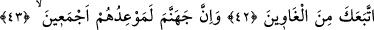
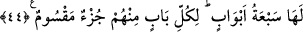
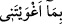

GÜNAHLARI SÜSLEYİP
AZDIRACAĞIM
39. “(İblis) Dedi ki: Ey Rabbim! Beni azdırmana yemin ederim ki ben de
yeryüzünde onlara (günahları) süsleyeceğim ve hepsini azdıracağım.”
40. “Ancak içlerinden ihlâslı kulların hariç.”
41. Allah Teâlâ buyurdu ki: “İşte bana varan doğru yol budur.”
42. “Benim halis kullarıma karşı senin bir hâkimiyetin yoktur. Ancak sana uyan
azgınlar hariç (Onları azdırabilirsin.)”
43. Muhakkak cehennem, onların hepsine vaadolunan yerdir.
44. Cehennemin yedi kapısı vardır. Onlardan her kapı için birer grup ayrılmıştır.
İblis: “Dedi ki: Ey Rabbim! Beni azdırmana yemin ederim ki” yâni Sen’in beni
azdırman üzerine yemin ederim ki, “ben de” bir aldanış yurdundan ibâret olan şu
“yeryüzünde onlara” Âdem’in zürriyetine günahları, mâsıyetleri, şehvetleri ve
lezzetleri “süsleyeceğim.”
Dünyâ aldanma yurdudur. Nitekim “fakat o dünyâya saplandı” (el-A‘râf, 7/176)
âyetinde de bu belirtilmektedir. Çünkü bütün bunlardan istifâde etme yeri ve bunların
yurdu yeryüzüdür.
et-Tibyân’da şöyle denir: “Yâni, tamâmen kendilerini kaptırsınlar diye yeryüzünde
kalmayı onlara süsleyeceğim.”
“Senin mutlak kudretine (izzet) andolsun ki” (Sâd, 38/82) ifâdesinde olduğu gibi
İblis’in Allah’ın güç ve kahrı ile açıklanan izzetine yemin etmesi, ‘azdırması’ üzerine
yemin etmesine ters düşmez. Çünkü, azdırmak da O’nun izzetinin bir fer’i ve
netîcelerinden birisidir. Belki de İblis her ikisine birden yemîn etmiş, fakat bazen O’nun
fiilinin sıfatı olan azdırmaya, bâzen de O’nun zâtının sıfatı olan izzetine yemîn ettiği
anlatılmıştır.
Kâşifî der ki: “Bâzılarına göre  deki “bâ” sebebiyet içindir. Yâni senin beni
gümrah eylemen sebebiyle ben de günahları Âdemoğullarının gözüne süslerim.”
Müfti Sa‘dî de bu görüşü daha evlâ görmüştür. Çünkü azdırmanın üzerine yemîn